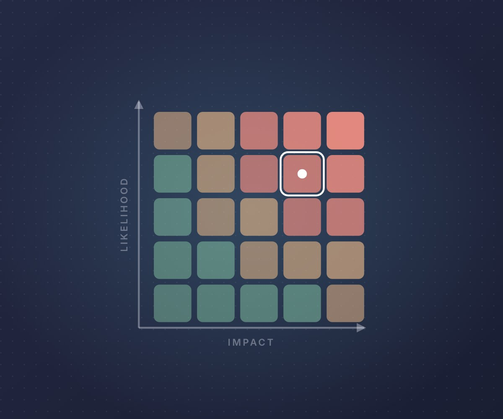
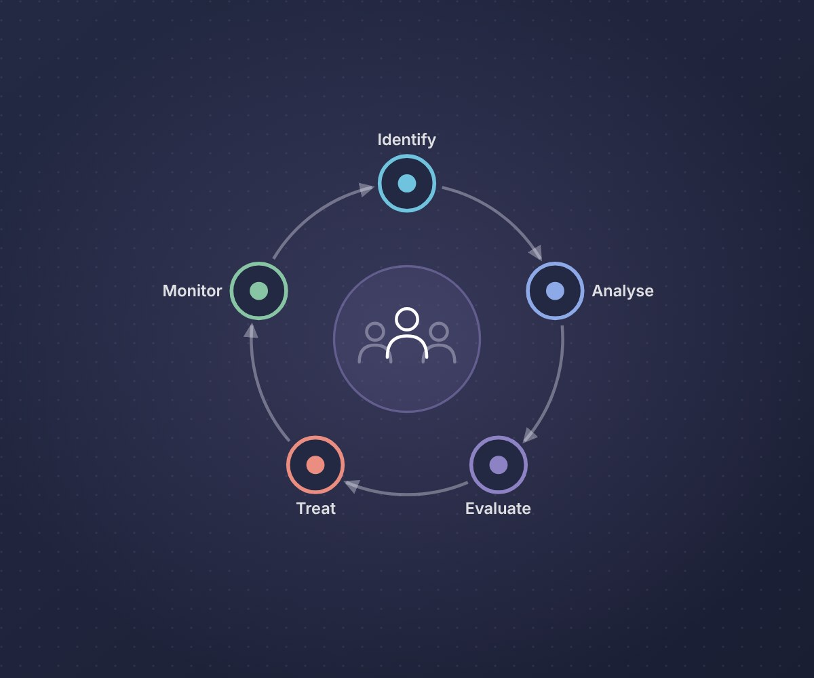
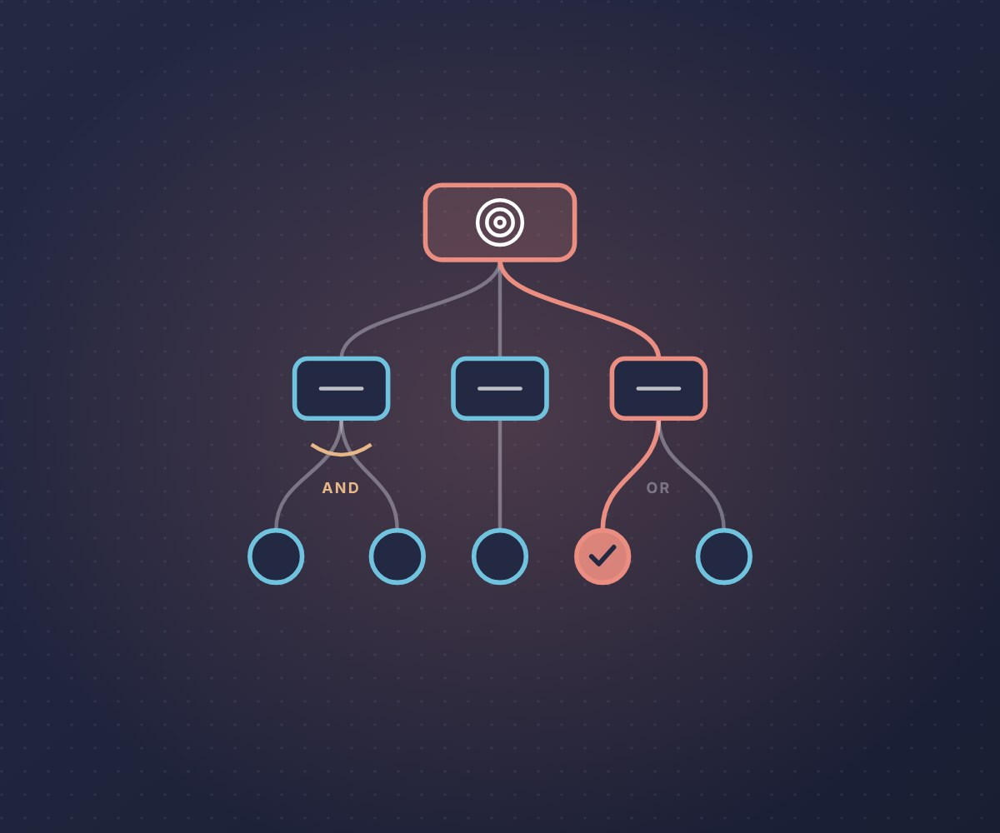
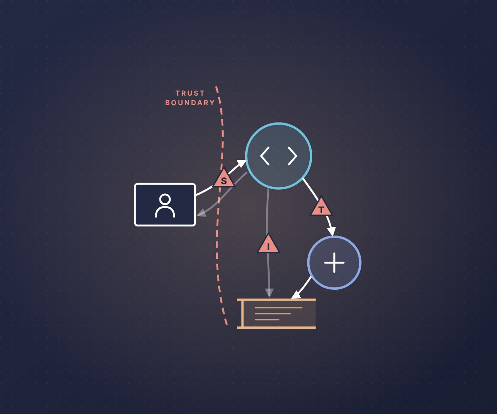
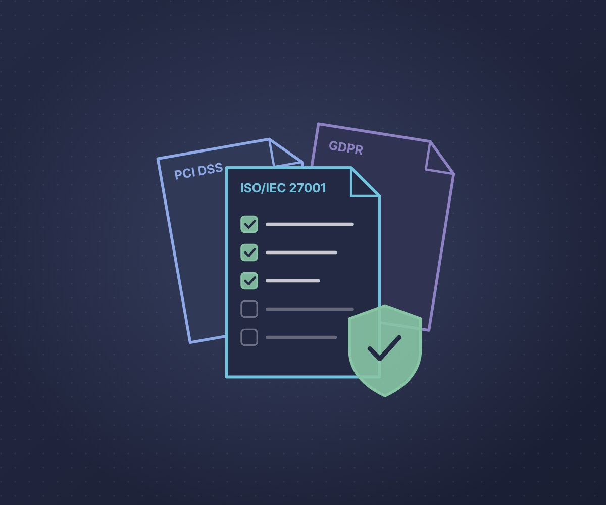
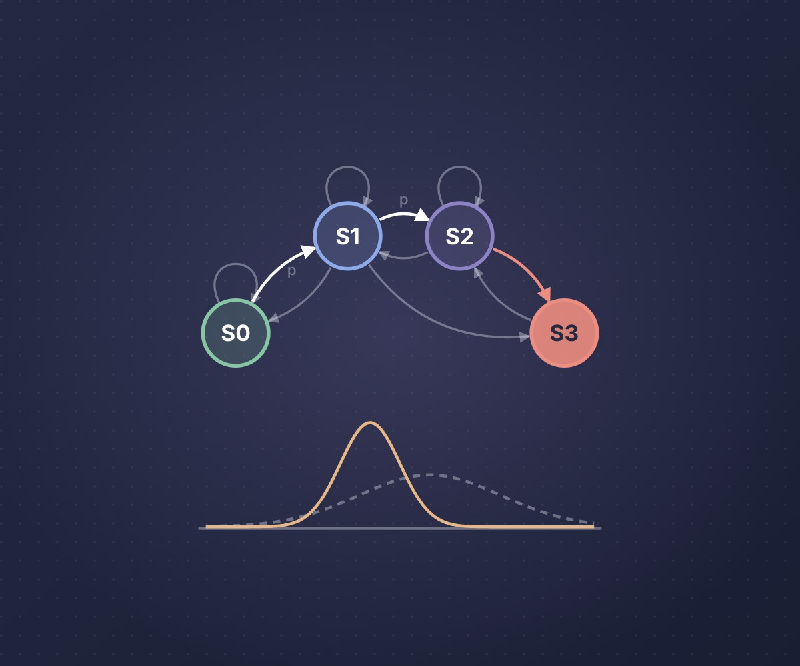
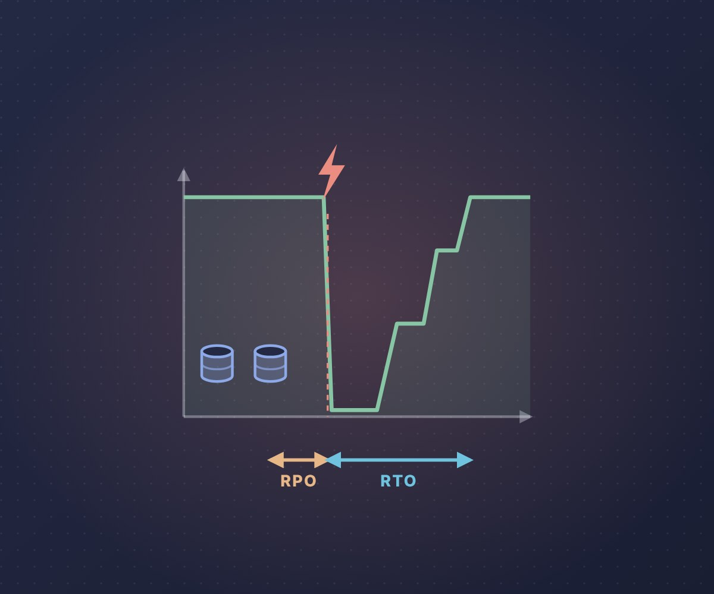
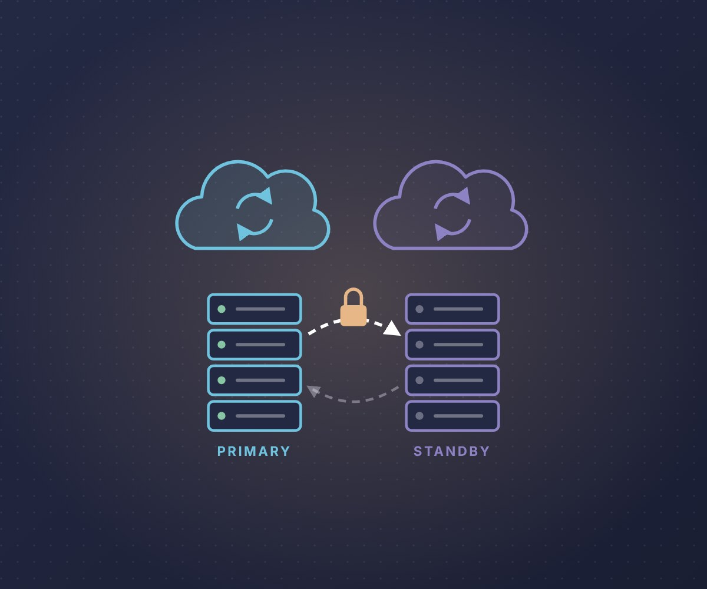
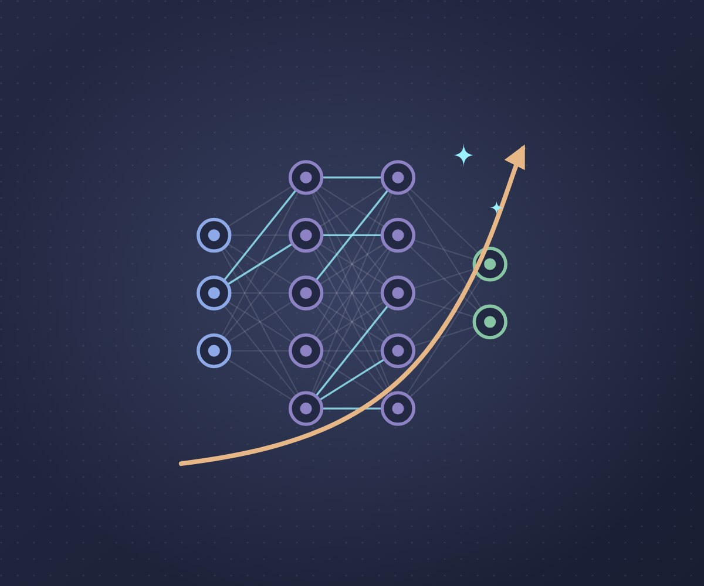
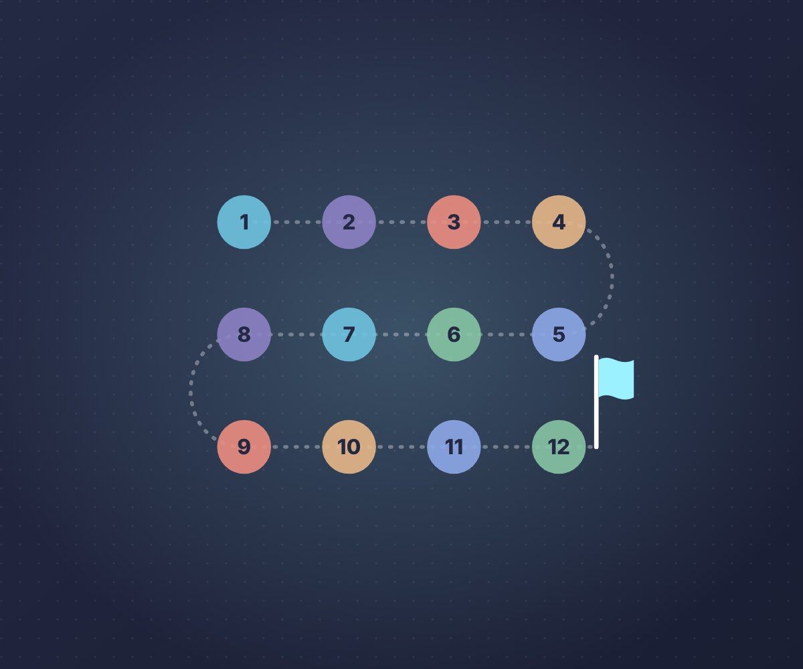

This module examines the integration of security and risk management within modern, enterprise-wide organisational structures. It explores how security and risk intersect, introducing qualitative and quantitative risk assessment methods, traditional models such as STRIDE, DREAD and Attack Trees, hybrid approaches, and standards including PCI-DSS, alongside business continuity and disaster recovery planning. The module also considers current research trends and emerging developments shaping the future of security and risk management.
About this e-portfolio
Each unit page below holds my reflection for that unit, structured using the What? So what? Now what? model, with the artefacts I produced: seminar answers, Python notebooks that reproduce or test published models, the team risk assessment for Pampered Pets and my individual executive summary. The end-of-module summary brings these together with my final reflection, an index of artefacts by unit, my contributions to the team project, the feedback I received and a skills matrix with an action plan.

Unit 1: An Introduction to Security and Risk Management
This unit is designed to provide the basic tools required to study and understand security risk management. It provides a number of definitions of risk and introduces the concepts of qualitative and quantitative risk assessments.

Unit 2: Users, Assessments and the Risk Management Process
This unit contains a deeper dive into the Risk Management Process – specifically looking at the effect of different types of assessment (Qualitative vs. Quantitative) and the role and importance of user participation in the process.

Unit 3: Introduction to Threat Modelling and Management
This unit introduces the difference between threats and vulnerabilities and reviews a range of threat modelling techniques, including STRIDE, DREAD, attack trees and hybrid models such as PASTA, together with guides for choosing between them.

Unit 4: Application of Threat Modelling and Management Techniques
This unit applies threat modelling in practice using the Threat Modeling Manifesto, the OWASP Threat Model Cookbook and MITRE ATT&CK, and evaluates how tools such as attack trees, STRIDE, DREAD and CVSS should be selected for different scenarios.

Unit 5: An Introduction to Security and Risk Standards in Industry and the Enterprise
This unit examines the role of industry and enterprise standards in security and risk management, how they shape risk assessments and threat models, and how to select appropriate standards such as ISO/IEC 27001, PCI DSS and the GDPR for a given organisation.
Unit 6: The Practical Implications of Security and Risk Standards
This unit applies security standards in practice, using GDPR case studies and the ICO, PCI and HIPAA sources to decide which standards apply to an organisation, how compliance could be checked and what mitigations would help a business meet them. It also holds our team’s Pampered Pets risk assessment report.
Unit 7: An Introduction to the Concepts of Quantitative Risk Modelling
This unit introduces quantitative risk modelling, covering Monte Carlo simulation, Bayesian methods and multi-criteria decision analysis such as TOPSIS, AHP and ANP, and when each should be used. It holds my Monte Carlo and Think Bayes notebooks and a quantitative review of the Pampered Pets executive summary.

Unit 8: Implementing Quantitative Risk Models
This unit puts quantitative risk models into practice with Monte Carlo simulation, Bayes’ theorem, attack trees and Markov models. It holds my seminar answers on Aijaz and Nazir’s model of social engineering threats, a notebook that tries to reproduce their results and a quantitative model of supplier impersonation fraud at Pampered Pets.

Unit 9: Risk, Business Continuity and Disaster Recovery
This unit covers business continuity and disaster recovery planning, business impact analysis, RTOs and RPOs, and emerging trends in information risk management. It holds a notebook that reproduces Andrade et al.’s availability model of a Disaster-Recovery-as-a-Service solution and a business impact analysis that tests the recovery objectives for Pampered Pets.

Unit 10: Practical Applications and Issues in DR Implementations
This unit covers the practical design of disaster recovery: how RPO and RTO values shape a solution, typical standby designs and their limits, the advantages and disadvantages of DRaaS, and the challenges of vendor lock-in, resilience and network security. It holds my seminar answers on vendor lock-in and cloud security and a notebook that designs and costs a DR solution for Pampered Pets against its recovery objectives.

Unit 11: Future Trends in Security and Risk Management
This unit reviews current and emerging trends in the field, from AI and automation to behavioural and economic approaches to risk, and asks which will be most influential. It holds my evaluation of six trends, notebooks that rebuild an autonomous cyber defence experiment and test an options model of reputational risk, and my executive summary for Pampered Pets with the tutor’s feedback and an evaluation against the Unit 6 status document.
Unit 12: The Great Debate – The Future of SRM
The final unit debated which trend will be most influential in security and risk management over the next five years. It holds my presentation for AI-enabled automation, a notebook that tests whether patching at human speed can keep up with exploitation, wiki entries for the future trends reading and my vote.

End-of-Module e-Portfolio: Summary and Final Reflection
My final reflection on the module, an index of artefacts from every unit, my contributions to the team project, an evaluation of my final project against the status document, the feedback I received and a skills matrix with an action plan.